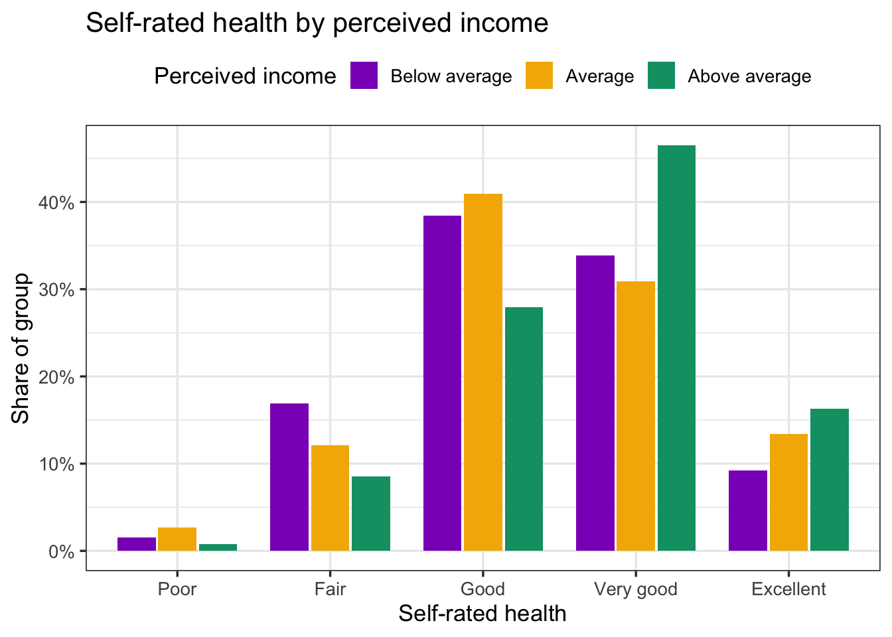

library(tidyverse)
library(knitr)20 Compare 3+ Groups
The one-way ANOVA for normal data and the Kruskal-Wallis test for data that are not, plus ANCOVA for a covariate
Abstract
This chapter is the Analysis Map’s “compare 3+ groups” row: three or more groups of different people and one continuous outcome. Researchers learn when the one-way ANOVA is the right test and when the Kruskal-Wallis test is, how to run each with its follow-up test (Tukey; pairwise Wilcoxon) and effect size, how to add a covariate with an ANCOVA, and how to report each result. The Play uses the Cohort 10 health status data to compare subjective social status and self-rated health across three perceived-income groups. The Lab runs the same tests on the lab dataset with Ref’s checks, and Your Turn gives the template for the team dataset.
Keywords
ANOVA, Tukey, eta squared, Kruskal-Wallis, ANCOVA, covariate, comparison
Resources Ref’s kickoff: find the Ref before you code
Ref’s kickoff: find the Ref before you code
Ref’s kickoff: find the Ref before you code
Open Project → Open .qmd → Run load-library chunk → Run All Chunks Above → code. If anything looks wrong, use Ref’s Quick Checklist.
ResourcesResources: ANOVA, Kruskal-Wallis, and ANCOVA
- One-way ANOVA in R (DataCamp tutorial)
- Kruskal-Wallis test in R (STHDA)
- R documentation:
?aov,?TukeyHSD,?kruskal.test,?pairwise.wilcox.test - Compare 2 Groups: the two-group version of every idea here, including why a rating is not a normal outcome
20.1 When is this the right test?
Your research question is a comparison, you have three or more groups of different people, and one continuous outcome. On The Analysis Map that is the compare 3+ groups row. Exactly two groups is the row above, Compare 2 Groups; the same people measured three times is a repeated-measures design, which this playbook does not cover, so talk to your peer mentor and/or Dr. Shane.
As in every box on the map, the shape of the outcome picks the test:
| Test | Use it when | R function | Follow-up | Report |
|---|---|---|---|---|
| One-way ANOVA (parametric) | the outcome is roughly normal within each group, or every group has 30 or more people | aov() |
TukeyHSD() |
M, SD, F(df1, df2), p, η² |
| Kruskal-Wallis (non-parametric) | the outcome is skewed, a group is small, or the outcome is a single rating with a few levels | kruskal.test() |
pairwise.wilcox.test() |
Mdn, H(df), p, pairwise p |
| ANCOVA | an ANOVA plus one continuous variable to account for (a covariate), such as age | aov(OUTCOME ~ COVARIATE + GROUP) |
TukeyHSD() is not valid; see the regression chapter |
F, p for the group row, “after accounting for…” |
GoGo: do these two things first
- Check the outcome’s shape within each group: Describe Your Data, and the Shapiro-Wilk check in Compare 2 Groups.
- Draw the plot: the bar chart or violin from Visualize a Comparison. A test without its plot is a number without a picture.
20.2 📋 The Play
ResourcesAbout the dataset:
health_status_data.csv (the Cohort 10 class dataset)
Every FRI Public Health team in Cohort 10 asked the same self-rated health question, Would you say your health in general is excellent, very good, good, fair, or poor?, along with the class variables of that year (age, sex, racialized identity, perceived income, and the MacArthur ladder of subjective social status). The five team datasets were merged into one file of 343 respondents so that health status could be examined across the whole class. SAMPLE_ID says which team’s study a person came from.
This is real data, already cleaned and de-identified: no response IDs, passwords, dates, or open-ended answers, and the five team samples differ in whom they recruited (students, families, farmers-market visitors), which is why the chapters filter by age. The variable names predate the class naming rules, so the Play renames them: HEALTH_STATUS becomes HEALTHSTATUS (1 = Poor … 5 = Excellent); SSS is subjective social status (1 to 10); SEX is biological sex (0 = male, 1 = female); and RACIALIZED_IDENTITY (1 = identified as white only, 0 = any other identity) becomes MINORITIZED_01 (1 = minoritized, 0 = not), named for the 1 the way a _01 variable should be. The other columns (RG_…, RI_…, PoorFairHealth, ExcellentHealth) are earlier recodes of the same questions and are not used here.
The Cohort 10 survey asked everyone to rate their household income as much below average, below average, average, above average, or much above average (PERCEIVED_INCOME), and the class collapsed that into three groups, INCOME3: below average, average, above average. Two questions, one for each line of the box: do the three income groups differ in subjective social status (SSS, the MacArthur ladder, 1 to 10), a continuous score; and do they differ in self-rated health (HEALTHSTATUS, 1 = Poor to 5 = Excellent), a single rating?
20.2.2 Play 2: self-rated health by perceived income (Kruskal-Wallis)
Self-rated health is one question with five answers. As Compare 2 Groups Play 3 explains, a rating like that is not normal and its mean describes nobody, so this is the non-parametric line of the box. The Kruskal-Wallis test is the Mann-Whitney U for three or more groups: it ranks everyone’s rating and asks whether the groups’ ranks differ.
Step 1: Look
healthstatus |>
group_by(INCOME3) |>
summarise(n = n(), median = median(HEALTHSTATUS), mean = mean(HEALTHSTATUS))# A tibble: 3 × 4
INCOME3 n median mean
<fct> <int> <dbl> <dbl>
1 Below average 65 3 3.32
2 Average 149 3 3.40
3 Above average 129 4 3.69health_props <- healthstatus |>
count(INCOME3, HEALTHSTATUS) |>
group_by(INCOME3) |>
mutate(prop = n / sum(n)) |>
ungroup()
plot_health_income <- ggplot(health_props, aes(x = factor(HEALTHSTATUS), y = prop, fill = INCOME3)) +
geom_col(position = position_dodge(width = 0.8), width = 0.75) +
scale_x_discrete(labels = c("1" = "Poor", "2" = "Fair", "3" = "Good", "4" = "Very good", "5" = "Excellent")) +
scale_y_continuous(labels = scales::percent_format(accuracy = 1)) +
scale_fill_manual(values = c("#8d14c1", "#f4b400", "#009e73")) +
labs(x = "Self-rated health", y = "Share of group", fill = "Perceived income",
title = "Self-rated health by perceived income") +
theme_bw(base_size = 13) +
theme(legend.position = "top")
plot_health_income
ggsave("plots/health_by_income_bars.png", plot = plot_health_income, width = 8, height = 4.5, dpi = 300)
#source: Compare 2 Groups (Play 3)
#explanation: proportions within each group, so a bigger group does not look healthierStep 2: The Kruskal-Wallis test and its follow-up
kw_health <- kruskal.test(HEALTHSTATUS ~ INCOME3, data = healthstatus)
kw_health
Kruskal-Wallis rank sum test
data: HEALTHSTATUS by INCOME3
Kruskal-Wallis chi-squared = 10.171, df = 2, p-value = 0.006185pairwise.wilcox.test(healthstatus$HEALTHSTATUS, healthstatus$INCOME3, p.adjust.method = "holm")
Pairwise comparisons using Wilcoxon rank sum test with continuity correction
data: healthstatus$HEALTHSTATUS and healthstatus$INCOME3
Below average Average
Average 0.58 -
Above average 0.02 0.02
P value adjustment method: holm #source: R documentation ?kruskal.test, ?pairwise.wilcox.test
#explanation: the Kruskal-Wallis statistic is reported as H with df = groups minus 1; the follow-up runs a Mann-Whitney U for each pair and adjusts the p-values (Holm)The follow-up table reads like a mileage chart: each cell is the adjusted p-value for one pair. Here the above-average group differs from each of the other two, and the below-average and average groups do not differ from each other.
Step 3: Report it
Self-rated health differed across the three perceived-income groups, Kruskal-Wallis H(2) = 10.17, p = .006. Pairwise Mann-Whitney U tests with a Holm correction showed that people reporting above-average income rated their health higher (Mdn = 4, Very good; n = 129) than people reporting average (Mdn = 3, Good; n = 149) or below-average income (Mdn = 3, Good; n = 65), both p = .02; the latter two groups did not differ (p = .58) (Figure 2).
20.2.3 Play 3: ANCOVA, the same comparison after accounting for age
The five team samples differ in age (students in some, families and farmers-market visitors in others), and older people tend to have higher incomes. An ANCOVA asks Play 1’s question again for people of the same age: the covariate goes first in the formula, the group last.
model_sss_age <- aov(SSS ~ AGE + INCOME3, data = healthstatus)
summary(model_sss_age) Df Sum Sq Mean Sq F value Pr(>F)
AGE 1 34.9 34.88 22.85 2.62e-06 ***
INCOME3 2 309.2 154.62 101.28 < 2e-16 ***
Residuals 339 517.5 1.53
---
Signif. codes: 0 '***' 0.001 '**' 0.01 '*' 0.05 '.' 0.1 ' ' 1nobs(model_sss_age) # people missing AGE are dropped: check the n[1] 343#source: R documentation ?aov
#explanation: covariate first, group last; read the INCOME3 row as "do the groups differ, at the same age?"The INCOME3 row still has a very small p-value: the income groups differ in subjective social status even after accounting for age. Report it as the Play 1 sentence plus “after accounting for age”, with the F and p from this table.
CautionCaution: three things to know about ANCOVA
- The order in the formula matters in
aov(): covariate first, group last. Reversed, the group row answers a different question. - People missing the covariate are dropped, so the n can shrink. Check it with
nobs(). TukeyHSD()is not valid after an ANCOVA. An ANCOVA is a linear regression with a categorical predictor, and Relate 3+ Variables shows how to read which groups differ from the comparison group.
CautionCaution: different does not mean caused
A survey comparison tells you that groups differ. It does not tell you why. Write “differed” or “scored higher”, not “caused” or “led to”.
20.3 🏈 The Lab
Ref’s kickoff. The lab dataset has three-group questions of both kinds. Two of them: do people in poor or fair, good, and very good or excellent general health differ in well-being (WELLBEING, an 8-item composite)? And do people on the political left, in the middle, and on the right differ in how much they believe mental health problems have social causes (SOCIAL, a 3-item composite that is skewed)? Run each the way the Play did, then open my check.
Before you start. source("lab_prep.R") to create mh_clean. Both group variables are made from a 1-to-5 question with case_when(), exactly as DISTRESS_4CAT was in Transforming Your Data: HEALTH_3CAT from HEALTHSTATUS (1–2 = Poor or fair, 3 = Good, 4–5 = Very good or excellent) and POL_3CAT from POLITICALBELIEFS (1–2 = Left, 3 = Moderate, 4–5 = Right). Make both factors with the levels in that order.
20.3.1 Lab Play 1: Well-being by general health (ANOVA and Tukey)
Make HEALTH_3CAT, keep people with a value on it, draw the violin plot, check normality within each group, run the ANOVA, then Tukey, then η².
Go Ref’s check: what should you find?
Ref’s check: what should you find?
- Groups: Poor or fair 36, Good 81, Very good or excellent 61 (n = 178 with a well-being score).
- Means: 3.03, 3.19, 3.56. Shapiro-Wilk p = 0.374, 0.478, 0.436.
- ANOVA: F(2, 175) = 9.24, p < .001; η² = 0.10.
- Tukey: Good vs Poor or fair p = .399; Very good or excellent vs Poor or fair p < .001; Very good or excellent vs Good p = .003.
20.3.2 Lab Play 2: Social causes by political beliefs (Kruskal-Wallis)
Make POL_3CAT, keep people with a value on it, check the shape of SOCIAL within each group (it is skewed), run the Kruskal-Wallis test and the pairwise follow-up with a Holm correction.
Go Ref’s check: what should you find?
Ref’s check: what should you find?
- Groups: Left 90, Moderate 26, Right 47. Medians: 4.33, 4.00, 3.67. Shapiro-Wilk p = 0.000, 0.044, 0.173.
- Kruskal-Wallis H(2) = 18.74, p < .001.
- Pairwise (Holm): Moderate vs Left p = .499; Right vs Left p < .001; Right vs Moderate p = .026.
20.3.3 Lab Play 3: Well-being by general health, accounting for age (ANCOVA)
Run Lab Play 1’s ANOVA again with AGE first in the formula, and check nobs().
Go Ref’s check: what should you find?
Ref’s check: what should you find?
HEALTH_3CATrow: F(2, 172) = 8.88, p < .001; n = 176 (2 people dropped for a missing age).
Caution Ref’s call: fouls to check if your numbers do not match
Ref’s call: fouls to check if your numbers do not match
Ref’s call: fouls to check if your numbers do not match
- The ANOVA table has one row with
Df= 1 for the group → the group is still a number.factor()it. - Your n is different from Ref’s → you did not drop people missing the outcome, or you ran
source("lab_prep.R")from a different folder. The counts in Ref’s check are afterfilter(!is.na(...)). - Tukey rows are in a different order or the
diffhas the opposite sign → your factor levels are in a different order. Setlevels = c(...)as in the solution. pairwise.wilcox.test()p-values differ slightly → checkp.adjust.method = "holm"; the default is also Holm, but"bonferroni"or"none"give different numbers.- The ANCOVA
HEALTH_3CATrow is identical to the ANOVA’s →AGEis after the group in the formula. Covariate first.
ImportantRequired: a three-group comparison in your report
For every three-or-more-group comparison in your RD Report and Final Report: the plot (bar chart with error bars, or violin), saved with ggsave() and captioned with the n of each group; the shape check you ran and what it showed; the test that matches the outcome, the ANOVA with Tukey and η² for a normal composite or continuous score (Play 1, Step 5) or the Kruskal-Wallis test with pairwise follow-ups for a skewed outcome or a single rating (Play 2, Step 3); and one sentence in Results in that Play’s form. Say in Methods how you defined the groups and whom you excluded. Add the ANCOVA only if a covariate is part of your research question.
20.4 🏆 Your Turn
library(tidyverse)
# 1. three or more groups, as a labeled factor
mydata <- alldata |>
mutate(GROUP_3CAT = factor(GROUP_3CAT, levels = c(1, 2, 3), # REPLACE GROUP_3CAT (a _#CAT variable)
labels = c("Group A", "Group B", "Group C"))) |> # REPLACE labels, comparison group first
filter(!is.na(GROUP_3CAT), !is.na(OUTCOME)) # REPLACE OUTCOME (a score)
mydata |> count(GROUP_3CAT) # every group big enough?
# 2. look
mydata |> group_by(GROUP_3CAT) |> summarise(n = n(), mean = mean(OUTCOME), sd = sd(OUTCOME), median = median(OUTCOME),
shapiro_p = shapiro.test(OUTCOME)$p.value)
ggplot(mydata, aes(x = GROUP_3CAT, y = OUTCOME, fill = GROUP_3CAT)) +
geom_violin(alpha = 0.6) + geom_boxplot(width = 0.12, outlier.shape = NA) + geom_jitter(width = 0.1, alpha = 0.4) +
theme_bw()
# 3a. normal outcome (parametric): ANOVA, Tukey, eta squared
model <- aov(OUTCOME ~ GROUP_3CAT, data = mydata)
summary(model)
TukeyHSD(model)
ss <- summary(model)[[1]]$`Sum Sq`; ss[1] / sum(ss) # eta squared: .01 small, .06 medium, .14 large
# 3b. outcome not normal, or a single rating (non-parametric): Kruskal-Wallis and pairwise follow-up
kruskal.test(OUTCOME ~ GROUP_3CAT, data = mydata)
pairwise.wilcox.test(mydata$OUTCOME, mydata$GROUP_3CAT, p.adjust.method = "holm")
# 4. optional: ANCOVA with a covariate (covariate first)
# model_cov <- aov(OUTCOME ~ COVARIATE + GROUP_3CAT, data = mydata); summary(model_cov); nobs(model_cov) # REPLACE COVARIATE
# 5. save the plot for the poster
# ggsave("plots/outcome_by_group3.png", width = 8, height = 5, dpi = 300) # REPLACE the name| Criteria | Ask yourself |
|---|---|
| Design | Are the groups different people? (The same people measured three times is a different design: ask your peer mentor and/or Dr. Shane.) |
| Groups | Is the group a factor, with every level named in words and at least 20 people in each? |
| Which test | Did you check the shape within each group and say which line of the Analysis Map box you are on: ANOVA (normal composite or continuous score) or Kruskal-Wallis (skewed, small group, or a single rating)? |
| Follow-up | Did you run the follow-up test only after a significant overall test, and report which pairs differed? |
| Effect size | Did you report η² for an ANOVA, and say whether it is small, medium, or large? |
| Plot | Does the caption give the n of each group, and is the plot saved with ggsave()? |
| Sentence | Does your Results sentence have F(df1, df2), p, η², and the pairs that differed (ANOVA), or H(df), p, medians, and the pairwise results (Kruskal-Wallis), and name the direction? |
| Exclusions | Does Methods say how the groups were defined and who was left out? |
Resources Ref’s final whistle: before you quit RStudio
Ref’s final whistle: before you quit RStudio
Save → Render → Back up to ELN → Quit, Don’t Save workspace. Details: Ref’s Quick Checklist.